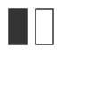

color()
Syntax
color(r, g, b, a) color(h, s, b, a) color(c, m, y, k, a) color(k, a)
Description
Returns a color. The color is either specified in terms of RGB, HSB, or CMYK depending
on the current colormode(). The default colormode is RGB.
Each RGB, HSB, or CMYK parameter ranges between 0.0 and 1.0. The last parameter is
optional and sets the alpha (opacity) value. Additionally, color() can be called with
just one parameter that sets the gray value. The returned color can be supplied as
parameter to the fill() or stroke()
command.
Returns
Color containing the defined color values
Tutorial
Example

|
clr1 = color(1.0, 0.0, 0.5) fill(clr1) rect(10, 10, 25, 25) clr2 = color(0.3, 0.0, 0.4) fill(clr2) oval(40, 40, 40, 40) |
fill()
Syntax
fill(r, g, b, a) fill(h, s, b, a) fill(c, m, y, k, a) fill(k, a) fill(color)
Description
Sets the current fill color. All shapes, paths and text following this command will be
drawn in this fill color. The color is either specified in terms of RGB, HSB or CMYK
depending on the current colormode(). Each RGB, HSB or CMYK
parameter ranges between 0.0 and 1.0. The default colormode is RGB. The last parameter
is optional and sets the alpha (opacity) value. Additionally, fill() can be called with
just one parameter that sets the gray value, or with the color value returned from the
color() command.
Returns
the current fill color
Example
fill(1.0, 0.0, 0.5) rect(10, 10, 25, 25) fill(.3, 0.0, 0.4) oval(40, 40, 40, 40) |
pen()
plotstyle()
shadow()
stroke()
Syntax
stroke(r, g, b, a) stroke(h, s, b, a) stroke(c, m, y, k, a) stroke(k, a) stroke(color)
Description
Sets the current stroke color. The stroke color is used to draw lines around shapes,
paths and text. All shapes, paths and text following this command will be outlined in
this stroke color. The color is either specified in terms of RGB, HSB or CMYK depending
on the current colormode(). Each RGB, HSB or CMYK parameter
ranges between 0.0 and 1.0. The default colormode is RGB. The last parameter is
optional and sets the alpha (opacity) value. Additionally, stroke() can be called with
just one parameter that sets the gray value, or with the color value returned from the
color() command.
Returns
Color containing the defined color values
Tutorial
Example
nofill() strokewidth(3) stroke(0.3, 0.0, 0.4) rect(10, 10, 20, 40) stroke(1.0, 0.0, 0.5) rect(40, 10, 20, 40) |
Classes
Color
Syntax
Color()
Description
The color commands in PlotDevice (see for example, color(),
fill(), stroke(), background()) return a Color object. This object has a
number of properties to manipulate indivdual color values in different spaces and can
be passed to the fill() and stroke() command.
Methods
clr.blend(clr)
clr.copy()
Properties
clr.r clr.g clr.b clr.a clr.hue clr.saturation clr.brightness clr.c clr.m clr.y clr.k
See the tutorial on colors to learn about all the properties.
With the blend() method you can create an in-between of two colors.
Gradient
NodeBox Compatibility
Though their functionality has been subsumed by the commands listed above, the following NodeBox Line+Color commands may also be used in your scripts.
capstyle()
Syntax
capstyle(style)
Description
Defines how endpoints of a path should be rendered. The style argument must be one of:
BUTT (the default), ROUND, or
SQUARE. Note that the latter two styles extend the length of
the path to add the endcaps.
Tutorial
Example

|
fill(None) stroke(0) strokewidth(10) capstyle(BUTT) line(20,20, 50,20) capstyle(ROUND) line(20,40, 50,40) capstyle(SQUARE) line(20,60, 50,60) |
colormode()
Syntax
colormode(mode, range=1.0)
Description
Changes the way PlotDevice interprets color data. By default, fill() and stroke() are set by values between 0.0
and 1.0 using the RGB color model. RGB corresponds to Red/Green/Blue. Alternatively HSB
(Hue/Saturation/Brightness) or CMYK (Cyan/Magenta/Yellow/Black) can be specified.
Regardless of which colormode is specified, PDF’s and images are exported in the
specified outputmode(). The optional range
parameter specifies whether color values are defined between 0.0 and 1.0, or something
else, 0 and 255 for example (range=255).
Returns
the current color mode (RGB, CMYK or HSB)
Tutorial
Example

|
colormode(RGB) fill(0.25, 0.25, 0.25) rect(10, 10, 40, 40) colormode(HSB) fill(0, 0, 0.25) rect(60, 10, 40, 40) |
joinstyle()
Syntax
joinstyle(style)
Description
Defines how vertices in a path should be rendered. The style argument must be one of:
MITER (the default), ROUND, or
BEVEL.
Tutorial
Example
fill(None) stroke(0) strokewidth(10) joinstyle(MITER) bezier([(20,20), (40,40), (60,20)], curvature=0) joinstyle(ROUND) bezier([(20,50), (40,70), (60,50)], curvature=0) joinstyle(BEVEL) bezier([(20,80), (40,100), (60,80)], curvature=0) |
nofill()
Syntax
nofill()
Description
Disables the current fill color. All shapes, paths and text following this command will
be drawn without a fill color.
Tutorial
Example
|  |
strokewidth(1.5) stroke(0.2) fill(0.2) rect(10, 10, 20, 40) nofill() rect(40, 10, 20, 40) |
nostroke()
Syntax
nostroke()
Description
Disables the current stroke color. All shapes, paths and text following this command
will be drawn without a stroke (outline) color.
Tutorial
Example

|
fill(0.2) strokewidth(6) stroke(1.0, 0.0, 0.5) rect(10, 10, 20, 40) nostroke() rect(40, 10, 20, 40) |
strokewidth()
Syntax
strokewidth(width)
Description
Sets the width of the stroke used for lines around shapes, paths and text.
Returns
the current stroke width
Example
nofill() stroke(0.2) strokewidth(1.5) rect(10, 10, 20, 40) strokewidth(3) rect(40, 10, 20, 40) |